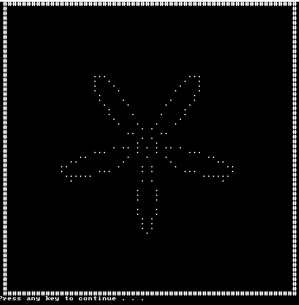
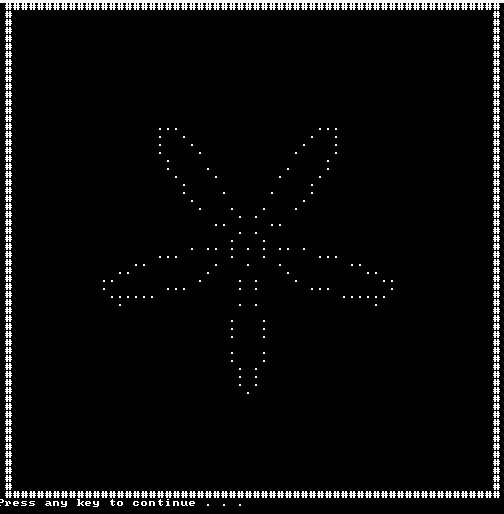

Rose Petal drawing algorithm
Posted: 25 Mar 2017 23:40
Hello all ^-^

This is just something I wanted to share with you! This algorithm draws a flower I hope you enjoy!
I hope you enjoy!

This is just something I wanted to share with you! This algorithm draws a flower
Code: Select all
@echo off & setlocal enableDelayedExpansion
call :canvas 60 60
set "_SIN=a-a*a/1920*a/312500+a*a/1920*a/15625*a/15625*a/2560000-a*a/1875*a/15360*a/15625*a/15625*a/16000*a/44800000"
set "SIN(x)=(a=(x * 31416 / 180)%%62832, c=(a>>31|1)*a, a-=(((c-47125)>>31)+1)*((a>>31|1)*62832) + (-((c-47125)>>31))*( (((c-15709)>>31)+1)*(-(a>>31|1)*31416+2*a) ), %_SIN%) / 10000"
set "COS(x)=(a=(15708 - x * 31416 / 180)%%62832, c=(a>>31|1)*a, a-=(((c-47125)>>31)+1)*((a>>31|1)*62832) + (-((c-47125)>>31))*( (((c-15709)>>31)+1)*(-(a>>31|1)*31416+2*a) ), %_SIN%) / 10000"
set "_SIN="
set "translate=x+=width / 2, y+=height / 2"
set "number_of_petals=5"
set "length_of_petals=20"
for /l %%# in (1,1,200) do (
set /a "angle+=1"
set /a "r=length_of_petals * !cos(x):x=number_of_petals * angle!"
set /a "x=r * !sin(x):x=angle!"
set /a "y=r * !cos(x):x=angle!"
set /a "%translate%"
call :plot !x! !y! "."
call :showCanvas
)
pause & exit
:canvas
set /a "width=%~1 - 1", "height=%~2 - 1", "conWidth=width + 5", "conHeight=height + 6", "_=0"
for /l %%a in (-2,1,%width%) do set "outerBuffer=!outerBuffer!#"
for /l %%a in (0,1,%width%) do set "widthBuffer=!widthBuffer! "
call :updateCanvas
mode con: cols=%conWidth% lines=%conHeight%
goto :eof
:updateCanvas
for /l %%a in (0,1,%height%) do set "_[%%a]=%widthBuffer%"
goto :eof
:showCanvas
cls
echo= %outerBuffer%
for /l %%a in (0,1,%height%) do echo= #!_[%%a]!#
echo= %outerBuffer%
goto :eof
goto :eof
:plot x y
setlocal
set /a "_x2=%~1 + 1"
(endlocal
set "_[%~2]=!_[%~2]:~0,%~1!%~3!_[%~2]:~%_x2%!"
)
goto :eof